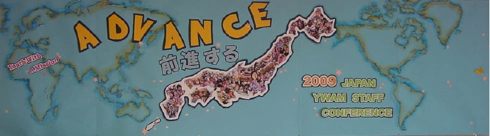

ユース・ウィズ・ア・ミッションのご紹介
ユース・ウィズ・ア・ミッション（通称YWAM,ワイワム）は、超教派の国際的な宣教団体で、大宣教命令の達成のため、３つの柱となる、「伝道・訓練・救済」の働きを行っております。
YWAMには、18,000人のフルタイム・スタッフが世界180ヶ国、1,000余りのベースで活動し、スタッフ全員は、ボランティアとして働いています。日本では、東京、大阪、長野，静岡，鹿児島，沖縄などに拠点を置き、DTS(弟子訓練学校)をはじめとする、各訓練学校、教会開拓、地域教会をサポートする働きなどをさせていただいております。
私達は、神様が御自分の民を「・・・行って、あらゆる国の人々を弟子と、そして、 父、子、聖霊の御名によってバプテスマを授け、また、わたしがあなたに命じて おいたすべてのことを守るように、彼らを教え・・」ることに召しておられると信じます 神様はイエス・キリストの福音を日本の人々にもたらすため、そして、神の栄光と 誉れのために育成し、賜物を与え、様々な方法によって福音をもたらすため、多くの 国々から人々を召しておられます。
ユース・ウィズ・ア・ミッション（YWAM）ジャパンは、26年前大阪にて誕生し、それ以後沖縄から東京と九州へと拡大して来ました。現在、YWAMの本部事務所は東京に設置されています。YWAMジャパンは、主に３つの分野、つまり訓練, 伝道 (教会開拓を含む) 憐みのミニストリーに焦点を当てており、これはまたYWAMインターナショナルにも当てはまります。


代表のあいさつ
「全世界に出て行き、すべての造られた者に、福音を宣べ伝えなさい。」マルコ16:15
この御言葉は私たちの団体の向かっていくべき道しるべです。福音を宣べ伝える目的の為に全世界に出て行くこと（伝道）、そしてそこで弟子をつくり（訓練）、助けを必要とする者に手を差し伸べること（救済）。神様は非常にシンプルな使命を信仰者に与えられました。私たちはこのシンプルな、しかし非常に大切な使命の遂行をひたすらに求め、祈り、そして行動に移していく事を信条としています。
日本という国は今までたくさんの霊的な祝福と恵みを諸外国から受け続けました。それはこれからも受け続ける事でしょう。祝福を受けた私たち日本。この国が次に取るべき行動、それは与える者となる事です。この日本がアジア諸国を、そして全世界を、福音の知らせと共に、豊かに祝福する国に変えられる事を信じ
ています。私たちユース・ウイズ・ア・ミッションは、この目的の遂行の為に献身してまいります。
ユース・ウイズ・ア・ミッション日本
代表 吉田和彦
- YWAM基本理念
- YWAMのミニストリー哲学
- DTS(弟子訓練学校)
- 全世界中で行われていて，日本でも東京，大阪，沖縄で行われている訓練学校